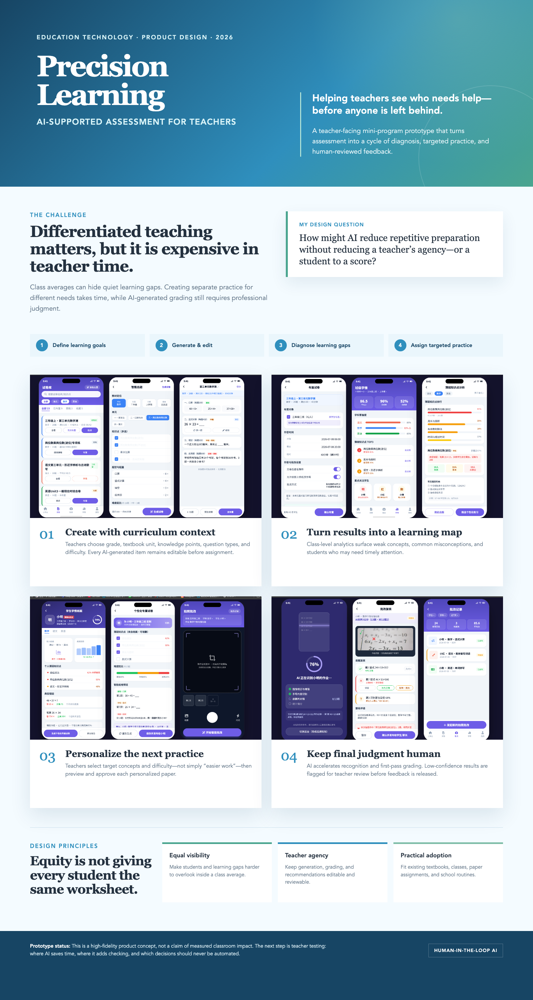

Technology · Teaching
AI Support Tool for Teachers
While volunteering in a rural area, I learned that a small number of teachers were responsible for many students and large stacks of grading. I began exploring an AI mini-program that could help review routine assignments and use students' work to suggest targeted follow-up practice. The goal is not to replace teachers, but to reduce repetitive workload and make their time with students more useful.
